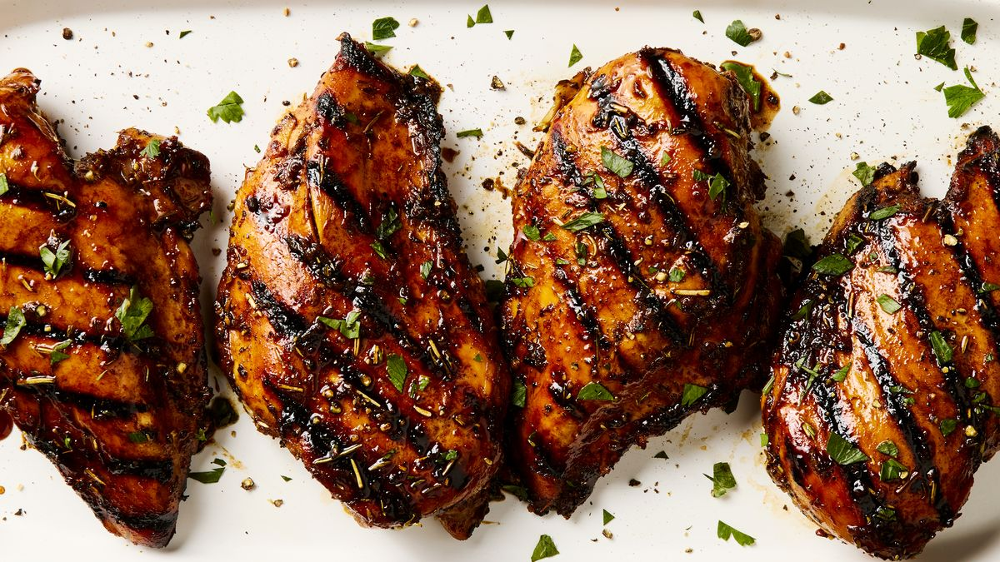

Grilled Chicken Marinade

Description
The recipe offers detailed instructions for marinating and grilling skinless, boneless, chicken breasts. The marinated breasts pair perfectly with just about anything, and they are the perfect choice for busy weeknights or your pickiest dinner guests
The marinade is ideal for grilling or baking any cut of chicken. Use it for breasts, thighs, wings, or drumsticks.
Ingredients
- 1/4 cup of red wine vinegar
- 1/4 cup of reduced-sodium soy sauce
- 1/4 cup olive oil
- 1.5 teaspoons dried parsley flakes
- 1/2 teaspoon dried basil
- 1/2 teaspoon dried oregano
- 1/4 teaspoon garlic powder
- 1/4 teaspoon ground black pepper
- 5 skinless, boneless chicken breasts, thinly sliced
Steps
- Gather all ingredients
- Whisk vinegar, soy sauce, olive oil, parsley, basil, oregano, garlic powder, and black pepper together in a bowl
- Pour into a reasonable plastic bag. Add chicken, coat with the marinade, squeeze out excess air, and seal the bag. Marinate in the refrigerator, at least 4 hours.
- Preheat grill for medium-low heat and lightly oil the grate. Drain and discard marinade
- Grill chicken on the preheated grill until no longer pink in the center, 4 to 5 minutes per side. An instant-read thermometer inserted into the center should read at least 165 degrees F (74 degrees C)